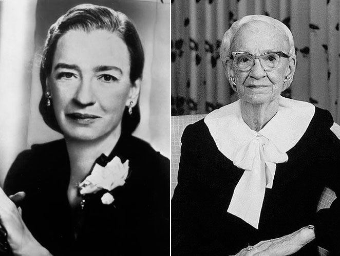

GRACE HOPPER
BIO
(Nueva York, 9 de diciembre de 1906 - Condado de Arlington, 1 de enero de 1992) fue una científica de la computación y también una militar estadounidense, con grado de contraalmirante, considerada una pionera en el mundo de las ciencias de la computación. Fue la primera programadora
que utilizó el Mark I y entre las décadas de los 50 y 60, desarrolló el primer compilador para un lenguaje de programación así como también propició métodos de validación.Era conocida por sus amistades como Amazing Grace.
- Ocupación
- Matemática
- oficial naval
- informática teórica
- catedrática de universidad y programadora
- Rama militar
- Armada de los Estados Unidos
- Distinciones
- Medalla por Servicio Distinguido de Defensa
- Legionario de la Legión del Mérito
- Salón de la Fama Nacional de Mujeres
- Legión al Mérito
- American Campaign Medal
- DFBCS
- Medalla Presidencial de la Libertad
- IEEE Emanuel R. Piore Award (1988)
- Medalla Nacional de Tecnología e Innovación (1991)
